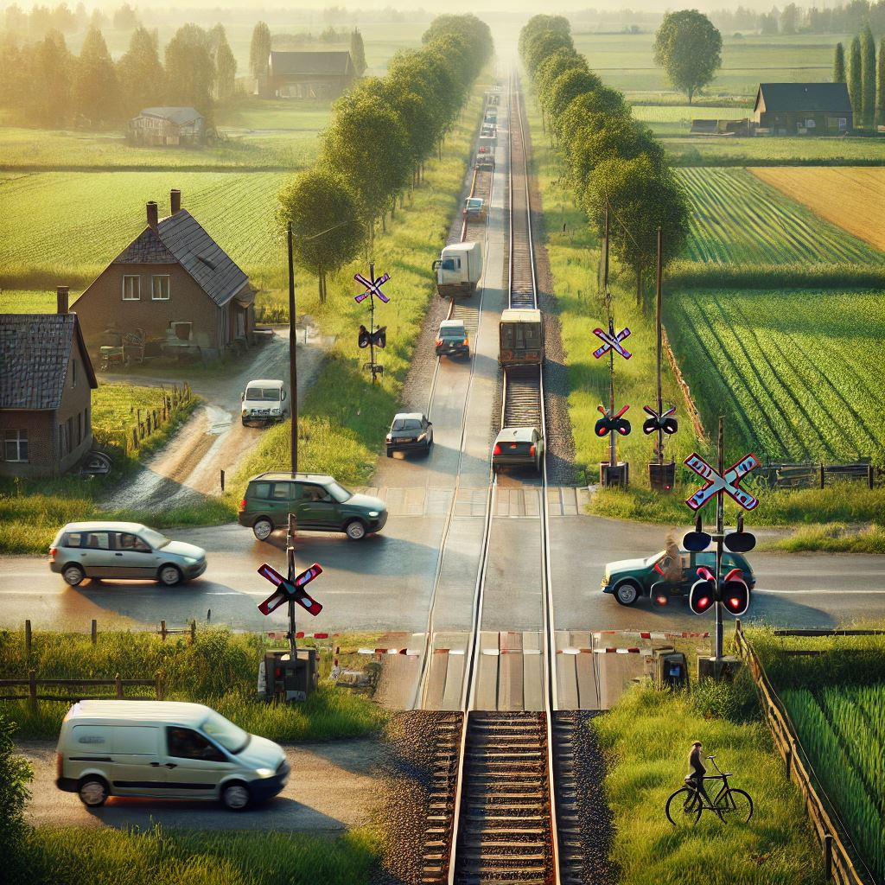

QUESTIONS PERMIS
Que signifie un panneau rond à bord rouge avec une voiture noire et une voiture rouge côte à côte ?

Que signifie un panneau triangulaire à bord rouge avec un point d'exclamation au centre ?

Quelle signification a un panneau bleu carré avec la lettre "P" blanche ?

Quel panneau indique une priorité par rapport aux conducteurs venant en sens inverse ?
Dans quelle situation devez-vous céder le passage à droite ?

Que devez-vous faire lorsqu'un feu tricolore est orange fixe ?

En cas d'absence de signalisation à une intersection, qui a la priorité ?
Lorsqu'un tramway s'arrête pour laisser monter des passagers, que devez-vous faire ?
Quelle est la vitesse maximale autorisée en agglomération ?
Quelle est la vitesse maximale sur autoroute pour un conducteur novice (moins de 2 ans de permis) ?
Quelle est la vitesse maximale en dehors des agglomérations sur une route à deux voies ?
Quelle est la distance de sécurité recommandée sur autoroute à 120 km/h ?
À quelle distance minimale devez-vous vous arrêter d'un passage à niveau non gardé ?
Que représente la "règle des deux secondes" ?
Quel est le taux maximal d'alcool autorisé pour un conducteur expérimenté
Quels sont les effets de l'alcool sur la conduite ?
Quelle est la sanction pour une alcoolémie supérieure à 0,8 g/L
Quelle précaution prendre en présence d'enfants près d'un passage piéton ?
Quelle est la distance latérale minimale à respecter en dépassant un cycliste en agglomération ?
En présence d'un piéton aveugle avec une canne blanche au bord de la route, vous devez :
Où est-il interdit de stationner ?
Combien de temps pouvez-vous vous arrêter dans une zone de livraison ?
Où pouvez-vous stationner dans une rue à sens unique ?
Quel équipement est obligatoire à bord d'un véhicule ?
Quelle est la pression idéale des pneus avant un long trajet ?
Quand devez-vous allumer vos feux de brouillard arrière ?
Quelle est la première action à entreprendre en cas d'accident avec blessés ?
Que devez-vous faire si vous êtes impliqué dans un accident sans blessé mais avec des dégâts matériels ?
Quelle est la meilleure façon de réduire la consommation de carburant ?
Quelle pression des pneus est recommandée pour une consommation optimale de carburant ?
Comment devez-vous adapter votre conduite en cas de pluie ?
Que devez-vous faire en cas de brouillard épais ?
Quelle est la sanction pour l'utilisation d'un téléphone portable tenu en main en conduisant ?
Que risquez-vous en cas de non-respect d'un feu rouge ?
Que devez-vous faire à l'approche d'un véhicule prioritaire en intervention (sirène et gyrophare allumés) ?
Est-il permis de suivre un véhicule prioritaire en intervention pour profiter du passage dégagé ?
Quelle est la charge maximale autorisée sur le toit d'une voiture ?
Comment devez-vous répartir le chargement dans votre véhicule ?
Quels documents devez-vous toujours avoir avec vous lorsque vous conduisez ?
En cas de contrôle routier, que risquez-vous si vous ne pouvez pas présenter votre permis de conduire ?
Quels feux devez-vous utiliser en agglomération bien éclairée la nuit ?
Quand devez-vous passer des feux de route aux feux de croisement ?
Quelle est la principale précaution à prendre avant de démarrer par temps de neige ?
Comment devez-vous adapter votre conduite sur une route verglacée ?
usqu'à quel âge un enfant doit-il être installé dans un siège auto adapté ?
Où est-il recommandé d'installer un siège auto pour enfant dans le véhicule ?
Quelle est la pratique recommandée pour une conduite écologique ?
Comment réduire la consommation de carburant en ville ?
Quelle est la première chose à faire en arrivant sur les lieux d'un accident ?
Comment vérifier si une personne inconsciente respire ?
Que signifie une ligne blanche continue au centre de la chaussée ?
Que devez-vous faire si vous rencontrez une ligne jaune en zigzag le long du trottoir ?